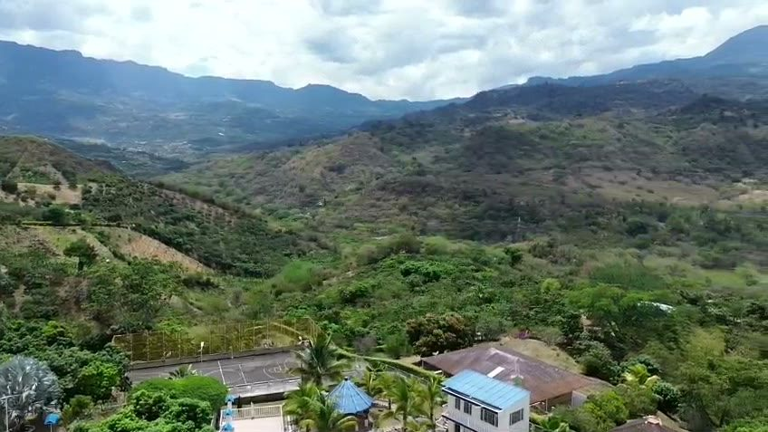

Laguna de Pedro Palo en Tena: qué es, cómo visitarla y qué saber antes de ir
Una laguna sagrada para los muiscas, rodeada de bosque de niebla y de más de 340 especies de aves. Te contamos qué es, por qué está protegida y cómo conocerla de forma responsable, paso a paso.
Lectura de 7 minHotel Cabaleón
La Laguna de Pedro Palo es el lugar más especial de Tena: un espejo de agua escondido entre bosque de niebla, con historia muisca y una de las mayores riquezas de aves de la región. No es un balneario sino una reserva protegida, así que vale la pena saber cómo visitarla antes de ir.
¿Qué es la Laguna de Pedro Palo?
Es una laguna de montaña en la vereda Catalamonte, en el municipio de Tena (Cundinamarca), a unos 12 km del casco urbano. Está a 2.011 metros sobre el nivel del mar, su espejo de agua tiene unas 21 hectáreas y se considera la mayor reserva de agua de la provincia del Tequendama.
La rodea un bosque subandino con robles, cedros y nogales, entre los 2.000 y los 2.280 metros de altura. Ese bosque, muchas veces cubierto de niebla, es el hogar de cientos de especies de aves, mamíferos y plantas.
Historia y leyendas de Tenasucá
Los muiscas la llamaban Tenasucá. Era un lugar sagrado donde se hacían rituales y ofrendas a sus dioses, y para los pueblos indígenas sigue siendo un sitio de gran valor espiritual.
Sobre el nombre de Pedro Palo hay varias leyendas. Una cuenta que un sacerdote jesuita llamado Pedro cayó a sus aguas y su sotana quedó enganchada en un palo. Otra habla de un indígena del mismo nombre que reapareció caminando sobre la laguna con un palo en la mano. Ninguna está comprobada, pero hacen parte del encanto del lugar.
Una reserva protegida: por qué no se puede entrar al agua
La laguna y su bosque forman una Reserva Forestal Protectora Productora, declarada por la CAR (Corporación Autónoma Regional de Cundinamarca) mediante el Acuerdo 38 de 1989, con territorio en Tena, La Mesa y Bojacá. Su plan de manejo ambiental se adoptó en 2014.
Hace décadas era un sitio de paseo de olla. La basura, las fogatas y el exceso de visitantes la afectaron, y en 1998 se cerró el acceso directo para recuperarla. Hoy la cuidan, además, los propietarios de las reservas naturales privadas que la rodean. Una de ellas, la reserva Tenasucá, funciona como aula ambiental y recibe investigadores y visitantes.
Avistamiento de aves en Pedro Palo
En la reserva y sus alrededores se han registrado más de 340 especies de aves. Entre las que solo viven en Colombia (endémicas) están el inca negro, el colibrí de frente azul y el dacnis turquesa. También se pueden ver el gallito de roca andino, el trogón enmascarado, el barranquero y varias especies de tucanes y carpinteros.
Las salidas de observación de aves suelen empezar muy temprano (las de Bogotá salen hacia las 5:00 a. m.), porque las aves están más activas al amanecer.
Cómo visitar la Laguna de Pedro Palo, paso a paso
- Elige una visita guiada. Operadores de ecoturismo y de observación de aves organizan caminatas hacia los miradores. Algunas reservas privadas de la zona, como Tenasucá, también reciben visitantes. Confirma siempre las condiciones antes de ir, porque el acceso está regulado.
- Conoce la ruta. Una caminata frecuente sale de Patio Bonito (La Mesa) y sigue antiguos caminos indígenas hasta Tena. Hay rutas registradas de unos 10 km, de dificultad moderada.
- Sal temprano. Verás más aves y tendrás mejor clima: en la tarde la niebla y la lluvia son más frecuentes.
- Equípate bien (abajo tienes la lista completa).
- Respeta las normas de la reserva y las indicaciones de tu guía.
- Termina el día descansando. Después de caminar en la montaña, baja al clima cálido: en Hotel Cabaleón, en la vereda Escalante de Tena, te esperan la piscina y el jacuzzi en su turno de 4:30 a 5:00 p. m.
Datos clave de la laguna
| Dato | Detalle |
|---|---|
| Ubicación | Vereda Catalamonte, Tena (Cundinamarca) |
| Distancia | Unos 12 km del casco urbano de Tena |
| Altura | 2.011 m s. n. m. |
| Espejo de agua | Unas 21 hectáreas |
| Protección | Reserva Forestal Protectora Productora (CAR, 1989) |
| Acceso | Restringido al agua; senderos y miradores con guía |
| Aves | Más de 340 especies registradas |
| Precio | No hay tarifa oficial publicada. Las salidas guiadas de operadores rondaban entre $110.000 y $145.000 por persona en 2026, según lo que incluyan |
Qué llevar a la caminata
- Botas o tenis con buen agarre: el camino puede estar húmedo.
- Impermeable: en el bosque de niebla llueve con frecuencia.
- Saco o chaqueta: a 2.000 metros hace más frío que en la parte baja de Tena.
- Bloqueador, gorra y repelente.
- Agua y algo de comer.
- Binoculares: si no tienes, en Hotel Cabaleón alquilamos equipos de avistamiento.
- Una bolsa para tu basura: todo lo que entra, sale contigo.
Cómo cuidarla durante tu visita
- No entres al agua ni te salgas de los senderos.
- No hagas fogatas ni paseo de olla.
- No dejes basura y no saques plantas, piedras ni animales.
- Habla en voz baja: así también verás más aves.
- Sigue siempre las indicaciones de tu guía y de los dueños de las reservas.
Dónde dormir cerca de la Laguna de Pedro Palo
La mejor forma de disfrutar la laguna es sin afanes: con un fin de semana en Tena. Hotel Cabaleón está en la vereda Escalante, en la parte cálida del municipio (entre 24 °C y 28 °C de día), con piscinas, jacuzzi, sauna, turco, desayuno incluido y equipos de avistamiento en alquiler. Mira todo lo que puedes hacer en Tena, la ruta desde Bogotá y qué empacar.
Fuentes: Radio Nacional de Colombia, ficha de Tena en Wikipedia y publicaciones sobre la reserva de la CAR (Acuerdo 38 de 1989 y Resolución 2444 de 2014). Consultadas el 12 de octubre de 2026.
Tu descanso comienza aquí
Elige fechas y habitaciones en nuestra página: ves tu factura al instante, con impuestos y desayuno incluidos, y confirmas con el anticipo del 50 % o el pago total. Directo con el hotel, sin intermediarios.
Preguntas frecuentes
¿Dónde queda la Laguna de Pedro Palo?
En la vereda Catalamonte del municipio de Tena (Cundinamarca), a unos 12 km del casco urbano y a unas 2 horas de Bogotá.
¿Se puede entrar a la Laguna de Pedro Palo?
El acceso al agua está restringido para proteger la reserva. Se conoce desde senderos y miradores, idealmente con guía y respetando las normas de cada reserva.
¿Se puede nadar o acampar en la laguna?
No. Es una reserva forestal protegida y no es un sitio para bañarse, acampar ni hacer paseo de olla.
¿Cuánto cuesta visitar la Laguna de Pedro Palo?
No hay una tarifa oficial publicada. Las salidas guiadas de operadores rondaban entre $110.000 y $145.000 por persona en 2026, según lo que incluyan. Confírmalo con el operador antes de ir.
¿Qué aves se pueden ver en Pedro Palo?
Se han registrado más de 340 especies, entre ellas aves que solo viven en Colombia como el inca negro, el colibrí de frente azul y el dacnis turquesa.
¿Qué llevar a la Laguna de Pedro Palo?
Botas o tenis con buen agarre, impermeable, saco, bloqueador, agua, binoculares y una bolsa para tu basura.
¿Dónde dormir cerca de la Laguna de Pedro Palo?
En Tena. Hotel Cabaleón está en la vereda Escalante, en la parte cálida del municipio, con piscinas, jacuzzi, desayuno incluido y equipos de avistamiento en alquiler.
Equipo de Hotel CabaleónComplejo turístico campestre en Tena, Cundinamarca. Publicado el .